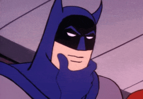
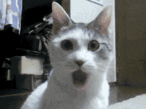
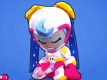
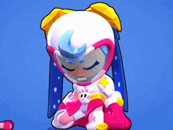
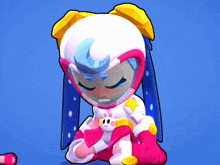

Fernando Benicio da Silva Filho
Ele tem 15 anos
Ele nasceu dia 18 de março de 2010
Bad Boy
Gosta de gatos
 

Fernando Benicio da Silva Filho
Ele tem 15 anos
Ele nasceu dia 18 de março de 2010
Bad Boy
Gosta de gatos

gg
gg
gg
Jogar
Assistir One Piece e outras coisas
Dormir
Estudar
Click com o Adam Sandler
Bastardos inglorios
Django Livre
Batman: Cavaleiro das Trevas 2
Pixels
Terraria
Brawl Stars
Clash of CLans
Titan Fall 2
Dead By Daylight
Celeste
Falando por Eduardo, eu conheci primeiro o Gabriel onde eu pedia sua internet imprestada, e de vezes em quando falava com Davi e jogava basquete com ele, só que começei a falar mais com o Gabriel e Arthur e resolvi sentar em um lugar perto deles para poder interagir, alén de que jogava basquete com Arthur e o Davi. O Fernando foi o último a começar a conversar, começamos a comentar de BrawlStars e outras coisas como jogos, comidas e animais.